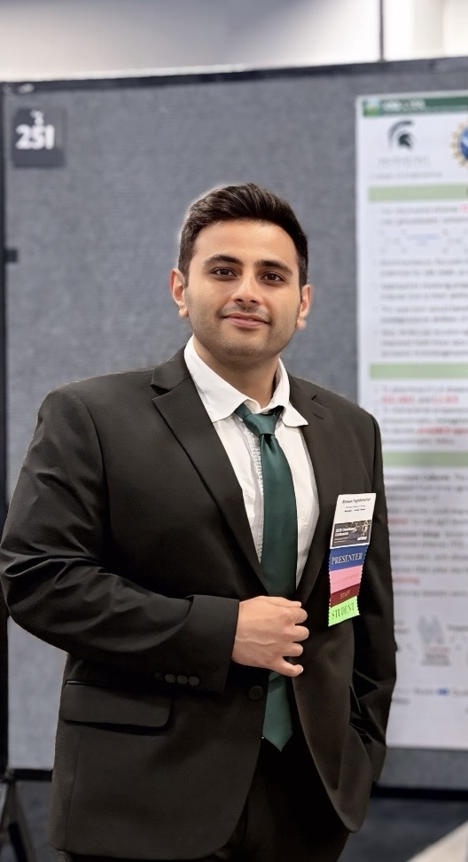

About
I am a Ph.D. student in Environmental Engineering at Michigan State University, working with Professor Alison M. Cupples. My research investigates how methane- and propane-oxidizing microbial communities transform chlorinated ethenes and 1,4-dioxane. I combine biodegradation experiments, quantitative PCR, sequencing-based microbial community analysis, and genome-resolved metagenomics to study the microorganisms and functional genes involved in contaminant transformation.
Previously, at the University of Tehran, I studied catalytic ozonation and adsorption for water and wastewater treatment. Building on this biological and physicochemical research experience, I am interested in developing integrated treatment approaches for contaminants of emerging concern, with an emphasis on practical water remediation solutions.

Research Interests
- Bioremediation of environmental contaminants
- Cometabolic biodegradation of chlorinated solvents
- Methanotrophic and propanotrophic microbial communities
- Environmental microbiology
- Functional genes involved in contaminant biodegradation
- Contaminants of emerging concern
- Advanced oxidation processes, including catalytic ozonation, photocatalysis, and UV-H2O2
- Adsorption processes for water and wastewater treatment
Selected Publications
- Faghihinezhad, M., Eshghdoostkhatami, Z., & Cupples, A. M. (2026). Characterization of multiple trichloroethene, cis-dichloroethene and 1,1-dichloroethene degrading propanotrophic communities. Journal of Environmental Management, 408, 129957.
- Faghihinezhad, M., Eshghdoostkhatami, Z., Bernstein, A., & Cupples, A. M. (2025). Identification of the dominant methanotrophs in trichloroethene degrading enrichment cultures from multiple sources. Journal of Hazardous Materials, 499, 140268.
- Faghihinezhad, M., Baghdadi, M., Shahin, M. S., & Torabian, A. (2022). Catalytic ozonation of real textile wastewater by magnetic oxidized g-C3N4 modified with Al2O3 nanoparticles as a novel catalyst. Separation and Purification Technology, 283, 120208.
- Faghihinezhad, M. (2025). Reclaimed wastewater in the food industry: Sources, treatment, and reuse. In Wastewater and Sludge Treatment for Reuse. Springer.
Teaching
I have served as a Graduate Teaching Assistant for ENE 381: Environmental Chemistry at Michigan State University. My teaching interests include environmental engineering, environmental chemistry, water and wastewater treatment, emerging contaminants, and inclusive engineering education.
Honors and Awards
- Kellogg Biological Station (KBS)–LTER Graduate Fellowship, Michigan State University, 2025
- Graduate Research Assistantship, Michigan State University, 2022–2026
- Elsevier Recognized Reviewer Certificate, 2021 and 2024
- Ranked 704 among approximately 40,000 participants in the Iranian Master’s entrance exam, 2018
Service and Outreach
- Departmental Lab Tour Volunteer, Department of Civil and Environmental Engineering, Michigan State University, 2025
- Poster Judge, University Undergraduate Research and Arts Forum, Michigan State University, 2024
- Department Representative, MSU College of Engineering Graduate Recruitment Event, 2023
- Graduate Student Assistant, Battelle Bioremediation and Chlorinated Solvents Symposium, 2023, 2025, and 2026
Contact
Email: faghihi@msu.edu
Google Scholar: Google Scholar Profile
LinkedIn: LinkedIn Profile